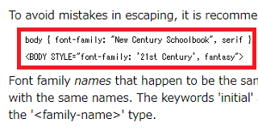

スタイルシートの書き方のポイント
スタイルシートに何も記述しない場合、ブラウザのデフォルトの状態で表示されますので、そこから必要な箇所だけ書いていくことをおすすめします。
例えば、このページでCSSに何も記述しない場合はこのように表示されます。
Chromeのデベロッパーツールなどで、この何も設定していないデフォルトの状態を調べてみますと、h1のフォントサイズが2em、上下のmarginが0.67em、font-weightがboldなどとなっていることが分かります。
このデフォルトの状態にて、行間や余白、あるいは見出しタグの大きさなどは既に最適化されているため、自分で独自に設定してしまうとかえって不自然な仕上がりになるかもしれません。ブラウザのデフォルトの状態をベースにしつつ、必要な箇所だけ記述していくとよいでしょう。
CSSを書く際の基本事項
実際に書いていく際には以下の点に注意することをおすすめします。
半角英数で書く
基本的に全て半角英数で書いていきます。
例外として、フォントファミリーの箇所で「font-family: "メイリオ";」などと日本語の全角文字で指定する際はクォートで囲って記述します。
見やすいように整えて書く
スタイルシートは見やすいように改行して形を揃えて書くのが一般的です。インデントで字下げする際はタブではなく、半角スペースを使うようにしましょう。
p {font-size:14px;}を改行した場合、このようになります。
p {
font-size: 14px;
}
インデントについての関連ページ：
→ HTMLソースの書き方
ただし、単に見やすくなるだけですので、改行してもサイトの表示には影響ありません。
コメントアウトで注記する
共同で作業をする場合、「ここからヘッダー部分」など、他の人にもわかりやすいようにコメントを挿入しておくとよいでしょう。
/* コメント部分 */
この箇所の記述は無効になるので全角文字で記述しても問題ありません。複数の人で管理している場合や一時的に無効にしたい部分などに使用すると便利です。
複数の指定をする
２つ以上を指定をする場合、半角英数のセミコロン「;」を使ってまとめて書くのが一般的です。
p {
font-size: 14px;
color: #000000;
}
この最初の「（:）コロン」と後ろの「（;）セミコロン」についてですが、最初の（:）コロンについては、値を指定するためのものですので省略するとエラーになります。
一方、後ろの（;）セミコロンについては「複数の指定をする際の区切り」になるため、「一つのみを指定する場合」は省略することができます。
p {font-size:14px}
p {color:#000000}
このふたつを合体させる場合、セミコロン（;）でつなげて以下のように記述します。
p {font-size:14px;color:#000000}
これを整形するとこのようになります。
p {
font-size:14px;
color:#000000
}
そのため、一番最後のセミコロンについては省略できますが、後からさらに追加する際など、セミコロンの記述忘れでエラーになる可能性もありますので、すべてを省略しないで書くことをおすすめします。
p {
font-size: 14px;
color: #000000;
}
「0」の値にはpxなどの単位を付けない
padding: 0px; → padding: 0;
ただし、付けてもサイトの表示には影響ありません。
デフォルトの値は記述しない
何も指定しないデフォルトの状態では、背景色は白、文字色は黒、フォントサイズは16pxです。
この状態で指定する場合、background-color: #ffffff;やcolor:#000000;などとあえて指定する必要はありません。
ただし、marginについてはデフォルトでは「0」ではないため、「0」を指定するのとしないのとではブラウザによって表示方法に違いが出てきます。
例えば、デフォルトの状態でh1のmarginは上下に0.67em、h2は上下に0.83emなどとなっているため、何も記述しない場合はブラウザ側で自動で間隔をとってしまうのに対し、「0」を指定した場合は間隔がびっちり詰まるので注意しましょう。
アルファベット順で書く
htmlソースの上から下へ読み込まれる順序にて記載しますが、カッコ内についてはabcのアルファベット順で書きましょう。
body {
border: ほにゃらら;
color: ほにゃらら;
font-family: ほにゃらら;
}
a {
color: ほにゃらら;
font-family: ほにゃらら;
}
アルファベット順でなくてもサイトの表示には特に影響ありません。
コロンの後とかっこの前に半角スペースを入れる
見やすくするため、コロンの後とかっこの前に半角スペースを挿入するのが一般的です。
text-align:center; → text-align: center;
.example{ほにゃ → .example {ほにゃ
この半角スペースについてはなくても表示には影響はありません。
半角スペースと改行を削除して容量を削減
逆に、CSSをMinify化してファイルサイズを少しでも削減したい場合、以下のかっこ直前とコロンの後の赤い半角スペースは省略できます。
#content {padding: 20px 0 10px 0;} → #content{padding:20px 0 10px 0;}
#content a {color: #000;} → #content a{color:#000;}
ただし、かっこ直前以外の部分で #contenta{color:#000;} などとしてしまうとエラーになるので注意しましょう。
修正箇所が多い場合、CSSをメモ帳などにコピペして置換すれば、一括で削減することができます。
半角スペースのみで置換してしまうとエラーになるため、半角スペースありの「 {」や「 :」を半角スペースなしの「{」や「:」に置換するとうまくいくはずです。
また、「}」を次の行の先頭まで含めて選択したうえで置換ボタンを押し、「}」に置換すれば、改行も削除できます。
最終的にはこのようになりますので、このページの下部でご紹介しているCSSのvalidatorでチェックしたのち、問題がなければ、実際に使用されることをおすすめします。
ちなみに、CSS validatorでチェックした際、見やすく整形されたCSSが下部に表示されますので、元に戻したい場合はそちらをコピペして使用されるとよいでしょう。
日本語などは文字化けする箇所もあるため、できるだけ元のCSSはバックアップをとってから削減することをおすすめします。
クォーテーションマーク
URLに引用符は必要ありません。
background-image: url('img/bg.png');
→ background-image: url(img/bg.png);
font-familyの場合、空白を含む場合などは引用符で囲む必要があり、ダブルクォートでもシングルクォートでも可能ですが、W3Cでは以下のような事例が紹介されています。

上記のように、CSSに記述する際はダブルクォートでもよいかと思います。
→ p {font-family: "ヒラギノ角ゴ Pro W3";}
ただし、htmlに直接スタイルを記述する場合、「style=""」のダブルクオートと重なってしまうため、シングルクォートで記述することをおすすめします。
→ <p sytle="font-family: 'ヒラギノ角ゴ Pro W3', serif;">
ショートハンドで簡略化する
paddingやmarginの値はショートハンドで簡略化して書くことができます。
例えば、#example {padding: 4px 4px 4px 4px;}は、#example {padding: 4px;}と同じ意味になるため、できるだけ簡略化して記述するようにしましょう。
また、カラーコードについても「#00ffcc」を「#0fc」などと省略して書くことができます。そのほか、背景のbackgroundなど、まとめて書ける場合はショートハンドして簡略化しましょう。
同じ記述はまとめて書く
同じ記述の箇所はカンマで区切ってまとめて書きましょう。
例えば、以下の例では「background-color: #cccccc;」の部分が共通しています。
.example {font-size: 94%; background-color: #cccccc;}
.content {background-color: #cccccc;}
#footer {background-color: #cccccc;}
共通している部分はカンマ（,）で区切って以下のようにまとめて書くことができるため、CSSの行数を短くすることができます。
.example {font-size: 94%;}
.example, .content,#footer {background-color: #cccccc;}
親要素の指定などは避ける
CSSを計算する際、単一のクラスの方が計算は簡単になります。
.text-innner {font-size:16px;}
一方、親要素を指定した場合、以下の例では.textを親要素にもつ.innerを探す必要があり、計算がより複雑になります。
.text .inner {font-size:16px;}
結果として、サイトのレンダリングが遅くなる可能性があるため、できるだけシンプルに記載することをおすすめします。
上から下へ、流れるように書く
例外はありますが、基本的に親要素で指定されている内容は子要素にも継承されます。そのため、個別にそれぞれ指定するのではなく、代表となる大きな親要素に１回だけ指定し、シンプルに記述するようにしましょう。
例えば、ヘッダーとコンテンツ、フッターのそれぞれの箇所で、文字の大きさを14pxに指定するとします。
この場合、#header {font-size:14px;}や#content{font-size:14px;}など、すべての要素にそれぞれ記述することもできますが、これらをすべて含む親要素のbodyや#outerに１回だけ記述しておくとすべてに適用されます。
また、htmlソースの上から下へ読み込まれる順序にて、スタイルシートでも上から下へ流れるように設定します。フッターの箇所を一番上に、ヘッダーの箇所を一番下になどと書いておくと修正する際に探すのにも手間がかかってしまいます。
加えて、同一箇所の指定は後に記述したものが優先され、前の箇所は上書きされるため、順序を考えて書くようにしましょう。
例えば、以下のように記述した場合、前の14pxは上書きされて後に記述した20pxが適用されます。
#header {
font-size:14px;
font-size:20px;
}
複数の属性を指定する
class属性やid属性に半角スペースを入れて、複数の属性を追加で指定することができます。
例えば、サイドバーなどで<div class="side">と指定していた箇所が複数あったとします。
<div class="side">ほにゃらら</div>
<div class="side">ほげほげ</div>
そのなかのひとつにだけ、上との間にmarginの値を10pxで指定したい場合、半角スペースで区切って<div class="side example">などと追加して複数指定することができます。
<div class="side example">ほにゃらら</div>
<div class="side">ほげほげ</div>
この場合、CSS側では、共通の.side {ほにゃらら}のあとに、その箇所にだけ指定したい.example {margin-top: 10px;}などを追加で書き、順番に記述していくとよいでしょう。
.side {font-size:13px;}
.example {margin-top: 10px;}
それぞれをまったく別の属性で個別に指定することもできますが、共通している箇所は同じCSSを重複して書くことになってしまうため、冗長になってしまいます。共通部分については一括で指定するとよいでしょう。
@charsetで文字コードを宣言
CSSの一番最初の冒頭で使用する文字コードを宣言しておくとよいでしょう。
@charset "UTF-8";
文字コードの箇所は大文字と小文字を区別しませんので、「@charset "utf-8";」でもよいかと思いますが、「@charset」については小文字で書く必要があります。
W3Cによると、文字コードを判定する際の優先順位の５番目で「UTF-8」が想定されていますので、UTF-8で保存する場合はこの記述は特に必要ないとは思います。けれども、「Shift_JIS」などで保存する際は「@charset "Shift_JIS";」などと指定しておくことをおすすめします。
また、この宣言した文字コードでファイルを保存する必要がありますので、@charsetで「UTF-8」で宣言した場合は「UTF-8」で保存するようにしましょう。
CSSのValidatorでチェック
CSSの書き方が正しいかどうかについては、htmlのvalidatorと同様、こちらのW3CのCSS検証サービスを利用してみるとよいでしょう。
→ The W3C CSS Validation Service - Jigsaw Demo Site